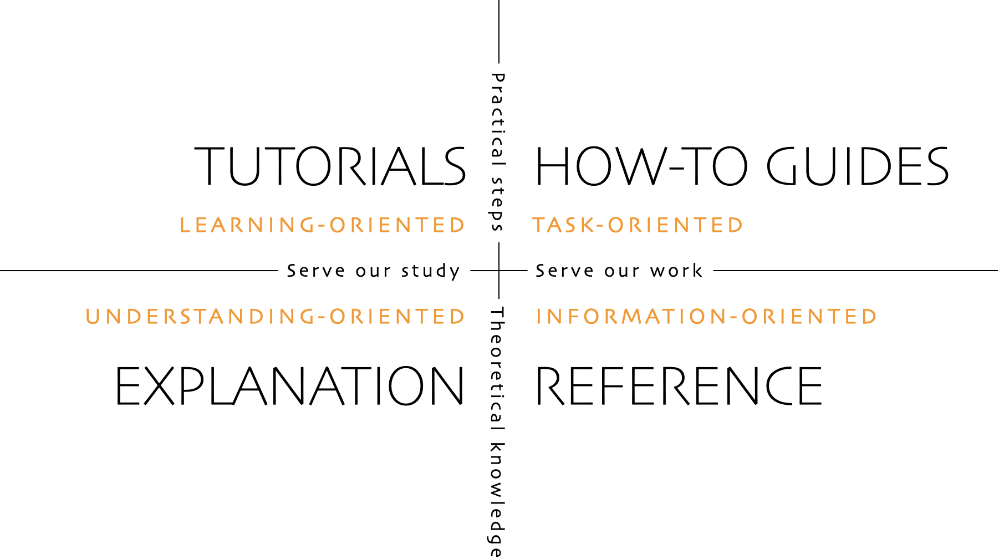

Diataxis

The above image and following text are gratefully pilfered from the far more authoritative original authors at https://diataxis.fr/. I have copied and minimally modified this for my own use in the context of my note system for seamless reading, but you really should go read this in their words. (“Diátaxis” n.d.)
Tutorials are lessons that take the reader by the hand through a series of steps to complete a project of some kind.
How-to guides are directions that take the reader through the steps required to solve a real-world problem.
Reference guides are technical descriptions of the machinery and how to operate it.
Explanation is discussion that clarifies and illuminates a particular topic.
Tutorials are lessons that take the reader by the hand through a series of steps to complete a project of some kind. Tutorials are learning-oriented.
What is it
A tutorial must help a beginner achieve basic competence and success with a product - by having them do something both meaningful and attainable. That context is obviously level dependent but in this case the user, and therefore us) are most concerned with learning how rather than learning that, because it’s concerned with skill: practical, not theoretical knowledge. Having completed a tutorial, the learner should be in a position to start to make sense of the rest of the documentation, and the product itself. For our purposes, a lesson is a learning experience. If you are not providing your learner with a learning experience, your tutorial isn’t doing the job it needs to. As a tool to teach, these exercises should be…
- meaningful - the reader needs to have a sense of achievement.
- successful - the reader needs to be able to complete it.
- logical - the path that the reader takes through it needs to make sense.
- usefully complete - the reader must have an encounter with all of the actions, concepts and tools they need to become familiar with.
In general, tutorials are the weakest part of documentation, the most misunderstood and the most difficult to do well. Most software projects have poor - or non-existent - tutorials. In an ideal lesson, the teacher is present and interacts with and responds to the student. A written tutorial is a far-from-perfect substitute for this. You can easily find that writing and maintaining your tutorials occupies as much time and energy as all the other parts of documentation put together. Finally, you will find that no other part of your documentation is subject to revisions the way your tutorials are. You only have to change a reference or how-to guide if something in the product changes, and even then, usually only part of it needs to change. In the case of a tutorial, you may come to the conclusion that the whole lesson should be completely rewritten, because you have thought of a better way to produce a learning experience for the pupil.
Cooking analogy
In cooking, this would be equivalent to teaching a child to cook. The only thing that really matters is that the child should enjoy the experience of working in the kitchen with you, and gains confidence, and wants to do it again. With a young child, you will often find that the lesson suddenly has to end before you’d completed what you set out to do. This is normal and expected; children have short attention spans. As long as the child managed to achieve something - however small - and enjoyed doing it, it will have laid down something in the construction of its technical expertise, that can be returned to and built upon next time. Cooking is a matter of craft. It’s knowledge - but it’s practical knowledge, not theoretical knowledge. It’s the same for any product: using it is a skill, and when we learn a new craft or skill, we always begin learning it by doing.
Framing
Don’t try to teach. Allow the user to learn. In the beginning, we only learn anything by doing - it’s how we learn to talk, or walk. Things to avoid in tutorials:
- abstraction
- generalization
- explanation
- choices
- information
Our job is to get the learner started, not to turn them into an expert. Don’t ever be embarrassed to start right at the beginning: a user can skim rapidly over what’s unnecessary, but if they need something and it’s not there, you risk losing them altogether. It’s also perfectly acceptable if what you get the beginner to do is not the way an experienced person would, or even if it’s not the ‘correct’ way - a tutorial for beginners is not the same thing as a manual for best practice. The point of a tutorial is to help your learner set out safely on their journey, not to get them to a final destination. The only reason not to lower the threshold is because you decide that you don’t want the responsibility of teaching beginners at below a certain level, or you judge that a certain level of skill is a reasonable prerequisite for using the product at all. Things a good tutorial has include…
-
- If the learner doesn’t need an explanation in order to complete the tutorial, don’t explain. For example, it’s enough to say something like: We’re using HTTPS because it’s more secure. There is a place for extended discussion and explanation of HTTPS, but not in a tutorial. Sometimes, even that much explanation is more than required. It can seem problematic that we are asking a user to do things, without much explanation why. In practice, for the learner, it rarely is. The learner is focused on following your directions and getting a result; their time for wanting to know more about the why of what they’re doing will come later. By all means include links to further explanatory material, if you feel it’s required, but try to resist the temptation to interrupt the flow of a tutorial by digressing into explanation.
-
- Our job is to guide the learner to a successful conclusion. There may be many interesting diversions along the way (different options for the command you’re using, different ways to use the API, different approaches to the task you’re describing) - ignore them. Your guidance needs to remain focused on what’s required to reach the conclusion, and everything else can be left for another time. Doing this helps keep your tutorial shorter and crisper, and saves both you and the reader from having to do extra cognitive work.
Language
- In this tutorial, you will…: Describe what the learner will accomplish (not: “you will learn…”).
- First, do x. Now, do y. Now that you have done y, do z.: No room for ambiguity or doubt.
- We must always do x before we do y because… (see Explanation for more details).: Provide minimal explanation of actions in the most basic language possible. Link to more detailed explanation.
- The output should look something like this…: Give your learner clear expectations.
- Notice that… Remember that… Let’s check… : Give your learner plenty of clues to help confirm they are on the right track and orient themselves.
- You have built a secure, three-layer hylomorphic stasis engine…: Describe (and admire, in a mild way) what your learner has accomplished (not: “you have learned…”)
How-to guides are directions that take the reader through the steps required to solve a real-world problem. How-to guides are goal-oriented.
What is it?
How-to guides can be thought of as recipes, directions that guide the reader through the steps to achieve a specific end, in other words these are task oriented, practical steps, that serve our work. Examples could be: how to calibrate the radar array; how to use fixtures in pytest; how to configure reconnection back-off policies. On the other hand, how to build a web application is not - that’s not addressing a specific goal or problem, it’s a vastly open-ended sphere of skill. How-to guides matter not just because users need to be able to accomplish things: the list of how-to guides in your documentation helps frame the picture of what your product can actually do. A rich list of how-to guides is an encouraging suggestion of a product’s capabilities. If they’re well-written and address the right subjects, you’re likely to find that how-to guides are the most-read sections of your documentation.
Cooking analogy
Consider a recipe, an excellent model for a how-to guide. A recipe clearly defines what will be achieved by following it, and addresses a specific question (How do I make…? or What can I make with…?). It’s not the responsibility of a recipe to teach you how to make something. A professional chef who has made exactly the same thing multiple times before may still follow a recipe - even if they created the recipe themselves - to ensure that they do it correctly.
Framing
Like a tutorial, a how-to guide contains a sequence of actions, that have an order. Unlike a tutorial, you don’t have to start at the beginning of the whole story and take your reader right to the end. Most likely, your user will also be in the middle of something - so you only need to provide a starting-point that they know how to reach, and a conclusion that actually answers a real question. A good “How-to”:
-
- good: How to integrate application performance monitoring
- bad: Integrating application performance monitoring (maybe the document is about how to decide whether you should, not about how to do it)
- very bad: Application performance monitoring (maybe it’s about how - but maybe it’s about whether, or even just an explanation of what it is)
Language
- This guide shows you how to…: Describe clearly the problem or task that the guide shows the user how to solve.
- If you want x, do y. To achieve w, do z.: Use conditional imperatives.
- Refer to the x reference guide for a full list of options.: Don’t pollute your practical how-to guide with every possible thing the user might do related to x.
Reference guides are technical descriptions of the machinery and how to operate it. Reference material is information-oriented.
What is it?
The only purpose of a reference guide is to describe, as succinctly as possible, and in an orderly way. Whereas the content of tutorials and how-to guides are led by needs of the user, reference material is led by the product it describes. In other words: references are information oriented, theoretical knowledge, that serves our work. In the case of software, reference guides describe the software itself - APIs, classes, functions and so on - and how to use them. Your users need reference material because they need truth and certainty - firm platforms on which to stand while they work. Good technical reference is essential to provide users with the confidence to do their work. Reference material should be austere and to the point. One hardly reads reference material; one consults it. Reference material is like a map. A map tells you what you need to know about the territory, without having to go out and check the territory for yourself; a reference guide serves the same purpose for the product and its internal machinery. Although reference should not attempt to show how to perform tasks, it can and often needs to include a description of how something works or the correct way to use it.
Cooking analogy
Perhaps you might consult an encyclopedia to read about an ingredient (for example, about liquorice).
Framing and language
Respect the structure of the machinery: The way a map corresponds to the territory it represents helps us use the former to find our way through the latter. It should be the same with documentation: the structure of the documentation should mirror the structure of the product, so that the user can work their way through them at the same time. In the case of code, this means arranging the sections of reference documentation to follow the architecture of the software, where possible.
- Be consistent: Reference material benefits from consistency. Be consistent, in structure, language, terminology, tone. There are many opportunities in writing to delight your readers with your extensive vocabulary and command of multiple styles, but reference material is definitely not one of them.
- Do nothing but describe: Technical reference has one job: to describe, and to do that clearly, accurately and comprehensively. Doing anything else - explaining, discussing, instructing, speculating - gets in the way of that job, and makes it harder for the reader to find the information they need. It can be tempting to introduce instruction and explanation, simply because technical reference can seem too bare. Instead, link to how-to guides, explanation and introductory tutorials as appropriate.
- Provide examples: Examples are valuable ways of providing illustration that helps readers understand reference, without becoming distracted from the job of describing. For example, an example of usage of a command can be a succinct way of illustrating it and its context.
- Be accurate: These descriptions must be accurate and kept up-to-date. Any discrepancy between the machinery and your description of it will inevitably lead a user astray.
Language
- X is an example of y. W needs to be initialized using z. This option does that.: State facts about the machinery and its behavior.
- Sub-commands are: a, b, c, d, e, f.: List commands, options, operations, features, flags, limitations, error messages, etc.
- You must use a. You must not apply b unless c. Never d.: Provide warnings where appropriate.
Explanation is discussion that clarifies and illuminates a particular topic. Explanation is understanding-oriented.
What is it?
Explanation clarifies, deepens and broadens the reader’s understanding of a subject. Explanation are understanding oriented, theoretical knowledge, that serves our study. It’s not concerned with what the user might be doing, like tutorials and how-to guides. It’s not a close-up view of the machinery, like reference material. It’s documentation that approaches a topic from a higher perspective, and from different angles. This allows explanation to become discussion, a more relaxed, freer way to consider something. Explanation joins things together. It’s documentation that it makes sense to read while away from the product itself. Explanation, unlike the other three forms of documentation, doesn’t have a direct part in a user’s practice or work. This means that it’s sometimes seen as being of lesser importance. That’s a mistake; it may be less urgent than the other three, but it’s no less important. It’s not a luxury. No practitioner of a craft can afford to be without an understanding of that craft, and needs the explanatory material that will help weave it together. Your explanation documentation doesn’t need to be called Explanation. Alternatives include: Discussion / Background / Conceptual guides / Topics.
It’s fairly rare to see explanation given its own section in documentation, and the idea that things need to be explained is often only faintly expressed. Instead, explanation tends to be scattered in small parcels in other sections. It’s not always easy to write good explanatory material. Where does one start? It’s also not clear where to conclude. There is an open-endedness about it that can give the writer too many possibilities. Tutorials, how-to-guides and reference are all clearly defined in their scope by something that is also well-defined: by what you need the user to learn, what task the user needs to achieve, or just by the scope of the machine itself. In the case of explanation, it’s useful to have a real or imagined why question to serve as a prompt. Otherwise, you simply have to draw some lines that mark out a reasonable area and be satisfied with that.
Cooking analogy
In 1984 Harold McGee published On food and cooking. The book doesn’t teach how to cook anything. It doesn’t contain recipes (except as historical examples) and it isn’t a work of reference. Instead, it places food and cooking in the context of history, society, science and technology. It explains for example why we do what we do in the kitchen and how that has changed. It considers its subject from multiple different perspectives, using them to illuminate it in different ways. After reading a book like On food and cooking, our understanding is changed. Our knowledge is richer and deeper. We may not have learned anything that we can apply in practice, or that will change what we do, but it will change how we think about our craft, and that is just as valuable. It’s something we might read at our leisure, away from the kitchen itself, when we want to think about cooking at a higher level, and to understand more about the subject.
Framing
- Make connections: When writing explanation you are helping to weave a web of understanding for your readers. Make connections to other things, even to things outside the immediate topic, if that helps.
- Provide context: Provide background and context in your explanation: explain why things are so - design decisions, historical reasons, technical constraints - draw implications, mention specific examples.
- Talk about the subject: Things to discuss include the bigger picture, history, choices, alternatives, possibilities, why: reasons and justifications
- Explanation guides are about a topic in the sense that they are around it. Even the names of your explanation guides should reflect this; you should be able to place an implicit (or even explicit) about in front of each title. For example: About user authentication, or About database connection policies.
- Discuss alternatives and opinions: Explanation can consider alternatives, counter-examples or multiple different approaches to the same question. You’re not giving instruction or describing facts - you’re opening up the topic for consideration. It helps to think of explanation as discussion: discussions can even consider and weigh up contrary opinions.
- Don’t instruct, or provide technical reference: One risk of explanation is that other things can tend to creep in. Explanation should do things that the other parts of the documentation do not. It’s not the place of an explanation to instruct the user in how to do something. Nor should it provide technical description. These functions of documentation are already taken care of in other sections.
Language
- The reason for x is because historically, y…: Explain.
- W is better than z, because…: Offer judgments and even opinions where appropriate…
- An x in system y is analogous to a w in system z. However…: Provide context that helps the reader.
- Some users prefer w (because z). This can be a good approach, but…: Weigh up alternatives.
- An x interacts with a y as follows:…: Unfold the machinery’s internal secrets, to help understand why something does what it does.
What am I writing?
In important respects, tutorials and how-to guides are indeed similar. They are both practical guides: they contain directions for the user to follow. They’re not there to explain or convey information. They exist to guide the user in what to do rather than what there is to know or understand. They both set out steps for the reader to follow, and they both promise that if the reader follows those steps, they’ll arrive at a successful conclusion. Neither of them make much sense except for the user who has their hands on the machinery, ready to do things. They both describe ordered sequences of actions. You can’t expect success unless you perform the actions in the right order. They are closely related, and like many close relations, can be mistaken for one another at first glance.
What matters is what the user needs. A tutorial serves the needs of the user who is at study. Its obligation is to provide a successful learning experience. A how-to guide serves the needs of the user who is at work. Its obligation is to help the user accomplish a task. These are completely different needs and obligations, and they are why the distinction between tutorials and how-to guides matters: tutorials are learning-oriented, and how-to guides are task-oriented.
| Tutorial | How to |
|---|---|
| A tutorial’s purpose is to help the pupil acquire basic competence. | A how-to guide’s purpose is to help the already-competent user perform a particular task correctly. |
| A tutorial provides a learning experience. People learn skills through practical, hands-on experience. What matters in a tutorial is what the learner does, and what they experience while doing it. | A how-to guide directs the user’s work. |
| The tutorial follows a carefully-managed path, starting at a given point and working to a conclusion. Along that path, the learner must have the encounters that the lesson requires. | The how-to guide aims for a successful result, and guides the user along the safest, surest way to the goal, but the path can’t be managed: it’s the real world, and anything could appear to disrupt the journey. |
| A tutorial familiarises the learner with the work: with the tools, the language, the processes and the way that what they’re working with behaves and responds, and so on. Its job is to introduce them, manufacturing a structured, repeatable encounter with them. | The how-to guide can and should assume familiarity with them all. |
| The tutorial takes place in a contrived setting, a learning environment where as much as possible is set out in advance to ensure a successful experience. | A how-to guide applies to the real world, where you have to deal with what it throws at you. |
| The tutorial eliminates the unexpected. | The how-to guide must prepare for the unexpected, alerting the user to its possibility and providing guidance on how to deal with it |
| A tutorial’s path follows a single line. It doesn’t offer choices or alternatives. | A how-to guide will typically fork and branch, describing different routes to the same destination: If this, then that. In the case of …, an alternative approach is to… |
| A tutorial must be safe. No harm should come to the learner; it must always be possible to go back to the beginning and start again. | A how-to guide cannot promise safety; often there’s only one chance to get it right. |
| In a tutorial, responsibility lies with the teacher. If the learner gets into trouble, that’s the teacher’s problem to put right. | In a how-to guide, the user has responsibility for getting themselves in and out of trouble. |
| The learner may not even have sufficient competence to ask the questions that a tutorial answers. | A how-to guide can assume that the user is asking the right questions in the first place. |
| The tutorial is explicit about basic things - where to do things, where to put them, how to manipulate objects. It addresses the embodied experience - in our medical example, how hard to press, how to hold an implement; in a software tutorial, it could be where to type a command, or how long to wait for a response. | A how-to guide relies on this as implicit knowledge - even bodily knowledge. |
| A tutorial is concrete and particular in its approach. It refers to the specific, known, defined tools, materials, processes and conditions that we have carefully set before the learner. | The how-to guide has to take a general approach: many of these things will be unknowable in advance, or different in each real-world case. |
| The tutorial teaches general skills and principles that later could be applied to a multitude of cases. | The user following a how-to guide is doing so in order to complete a particular task. |
Mostly it’s fairly straightforward to recognize whether you’re dealing with one or the other. Reference, as a form of writing, is well understood; it’s used in distinctions we make about writing from an early age. In addition, examples of writing are themselves often clearly one or the other. A tidal chart, with its tables of figures, is clearly reference material. An article that explains why there are tides and how they behave is self-evidently explanation. There are good rules of thumb if you get confused. If it’s boring and unmemorable it’s probably reference. Lists of things (such as classes or methods or attributes), and tables of information, will generally turn out to belong in reference.
On the other hand, if you can imagine reading something in the bath, probably, it’s explanation (though really there is no accounting for what people might read in the bath). Imagine asking a friend, while out for a walk or over a drink, Can you tell me more about topic? - the answer or discussion that follows is most likely going to be an explanation of it.
Mostly we can rely safely on intuition to manage the distinction between reference and explanations. But only mostly - because it’s also quite easy to slip between one form and the other. It usually happens while writing reference material that starts to become expansive. For example, it’s perfectly reasonable to include illustrative examples in reference (just as an encyclopedia might contain illustrations) - but examples are fun things to develop, and it can be tempting to develop them into explanation (using them to say why, or show what if, or how it came to be). As a result one often finds explanatory material sprinkled into reference. This is bad for the reference, interrupted and obscured by digressions. But it’s bad for the explanation too, because it’s not allowed to develop appropriately and do its own work. The real test though if we’re in doubt about whether we’re something is or is supposed to be reference or explanation is: is this something someone would turn to while working, that is, while actually getting something done, executing a task? Or is it something they’d need once they have stepped away from the work, and want to think about it? These are two very fundamentally different needs of the reader, that reflect how, at that moment, the reader stands in relation to the craft in question, in a relationship of work or study.
Reference is what a user needs in order help apply knowledge and skill, while they are working. Explanation is what someone will turn to to help them acquire knowledge and skill - “study”. Understanding those two relationships and responding to the needs in them is the key to creating effective reference and explanation.
In short:
When in doubt as to where to place something, ask yourself:
- Are we dealing with practical steps (action, something someone will do), or are we dealing with theoretical knowledge (propositional knowledge, information, something someone will only think)?
and:
- Are we dealing with study (the acquisition of skills and knowledge) or work (the application of skills and knowledge)?
| If the content describes… | …and serves the user’s… | …then it must belong to… |
|---|---|---|
| practical steps | study | a tutorial |
| practical steps | work | a how-to guide |
| theoretical knowledge | work | reference |
| theoretical knowledge | study | explanation |
Again, all credit to the original authors for the above content at https://diataxis.fr/. You really ought to go read this in their words. (“Diátaxis” n.d.)